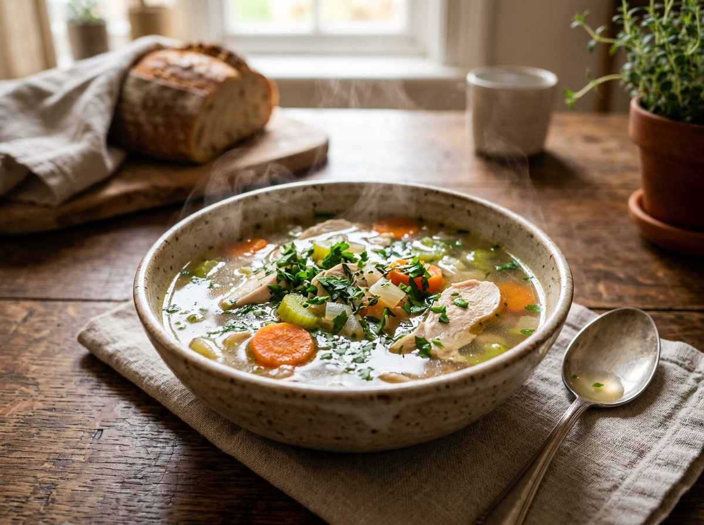

Pepes Ayam
Pepes ayam adalah makanan sehat karena dimasak tanpa minyak melalui pengukusan dengan daun pisang, kaya protein berkualitas tinggi, serta sarat antioksidan dari limpahan bumbu rempah alami.
Bahan - Bahan
- 800 gr/ 1 ekor ayam
- 2 ikat daun kemangi
- 2 lembar daun salam
- 1 batang serai besar,
- 6 cabai rawit merah, diiris
- garam, kaldu bubuk
- daun pisang
Bumbu Halus
- 8 bawang merah
- 4 bawang putih
- 3 kemiri
- 1 ruas kunyit
- 1 ruas jahe
- lengkuas memarkan
Manfaat Bahan
Informasi Nutrisi Gizi
Nutri-Level
sangat sehat dan kaya serat alami, berkat metode pengukusan tanpa minyak, kandungan protein tinggi.
Cara Memasak
Memotong Ayam
Ayam dipotong ukuran besar bisa 7 potong, kemudian dicuci bersih dan disayat-sayat bagian dada agar bumbu meresap.

Ungkep Ayam Dengan Bumbu Rempah
Ungkep ayam dengan bumbu halus, kalau saya bumbu tanpa ditumis. Masukkan salam, serai, garam & kaldu bubuk. Tunggu sampai air surut dan koreksi rasa.

Bungkus & Kukus Ayam
Setelah air menyusut, matikan api. Bungkus ayam dengan daun pisang, tambahkan daun kemangi dan irisan cabai rawit, kemudian kukus selama kurang lebih 20 menit hingga daun layu.
Pepes Ayam, lalu Sajikan
Panaskan panggangan, kemudian panggang pepes ayam agar bumbu lebih meresap dan tidak berair. Angkat dan sajikan